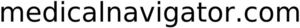

Trade Mark Journal No.2026/007 13 February 2026
WO0000001899422 (35,44)
Office of origin: Slovakia
Date of International Registration:16 October 2025
Date of designation in the UK:
16 October 2025

- Class 35
- Business inquiries; bill-posting; dissemination of advertising matter; updating of advertising material; market studies; business investigations; publication of publicity texts; advertising; computerized file management; providing business information; compilation of information into computer databases; systemization of information into computer databases; online advertising on a computer network; rental of advertising time on communication media; price comparison services; marketing; influencer marketing; radio advertising; television advertising; writing of publicity texts; scriptwriting for advertising purposes; compiling indexes of information for commercial or advertising purposes; outdoor advertising; development of advertising concepts; administrative services for medical referrals; business intermediary services relating to the matching of various professionals with clients; lead generation services; business partnership search; commercial intermediation services; targeted marketing; development of marketing concepts; data search in computer files for others; providing commercial information and advice for consumers in the choice of products and services; providing commercial and business contact information; negotiation and conclusion of commercial transactions for third parties; updating and maintenance of data in computer databases; providing business information via a website; providing user reviews for commercial or advertising purposes; providing user rankings for commercial or advertising purposes; providing user ratings for commercial or advertising purposes; computerized management of medical records and files; sales prospecting for others; data processing services (office functions).
- Class 44
- Public bath services for hygiene purposes; Turkish bath services; beauty salon services; medical clinic services; chiropractic; hairdressing; convalescent home services; hospital services; health care; massage; medical services; opticians' services; physiotherapy; sanatorium services; veterinary assistance; dentistry services; nursing home services; animal grooming; blood bank services; hospice services; manicuring; birth attendant services; nursing, medical; pharmacy advice; plastic surgery; pet grooming; hair implantation; services of a psychologist; aromatherapy services; artificial insemination services; rehabilitation for substance abuse patients; in vitro fertilization services; telemedicine services; sauna services; solarium services; health spa services; visagists' services; preparation of prescriptions by pharmacists; therapy services; health centre services; alternative medicine services; speech therapy; health counselling; orthodontic services; medical advice for persons with disabilities; palliative care; rest home services; human tissue bank services; animal-assisted therapy; medical screening; home-visit nursing care; dietary and nutritional advice; acupuncture; cupping therapy; postnatal care services; regenerative medicine services; aesthetician services; hair dyeing services; occupational therapy; health assessment services; barber shop services; providing service animals to persons with disabilities; dance therapy; art therapy; music therapy; remote monitoring of medical data for medical diagnosis and treatment; medical treatment using cultured cells; cultured cell bank services for medical transplantation; learning disability screening services; attention deficit disorder screening services (ADD); attention deficit hyperactivity disorder screening services (ADHD); diagnosis of visual processing disorders; vaccination services; medical examination for quarantine clearance purposes; medical examination; optometry services; mental health services; occupational health consultancy; providing mental health rehabilitation facilities; providing physical rehabilitation facilities; pathological examination for medical diagnosis and treatment; pathological testing for diagnostic and treatment purposes; drug testing of participants in sports for the use of performance enhancing substances; medical analysis services for diagnostic and treatment purposes provided by medical laboratories.
Simona Biosystems s.r.o.
Representative: BEATOW PARTNERS s.r.o., Panenská 23, SK-811 03 Bratislava, SLOVAKIA